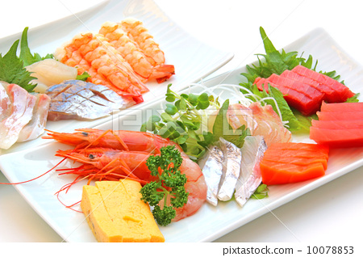
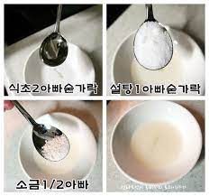
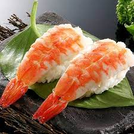

초밥을 n배로 맛있게! 새우초밥 그자체..
식사대용 | 조리 30분 | 1인분 | 상급 | 조회수 12345

날이 추워지고 뜨거운 장국과 우동의 계절이 찾아왔네요..집에서 여유를 즐기며 간단하게 즐겨볼 수 있는 새우초밥 메뉴를 준비했어요. 제철을 맞이한 새우로 맛있는 새우초밥을 함께 만들어볼까요?
초밥을 n배로 맛있게! 새우초밥 재료 정보

레시피 정보
1. 초밥용 초새우를 준비합니다.

2. 식초 1큰술, 설탕 1/2큰술, 소금 1/2작은술을 넣고 배합초를 만들어주세요. (밥 한공기기준입니다)

3. 단촛물을 섞을 밥을 먹을 만큼 준비합니다.
4. 밥이 뜨거울때 배합초 넣고 섞은다음 한김빠지고 식었을때 초밥을 만들기 시작하세요.
5. 밥위에 새우를 살짝 올리고 한번 꾹 눌러주면 완성.

초밥을 n배로 맛있게! 새우초밥 간단 레시피
- 초새우 준비!
- 단촛물 만들 준비!
- 밥과 단촛물 shake it!
- 뜨거우니까 식혀주기~
- 모양잡고 만들어서 먹기
위 레시피에 나온 제품을 구매하시려면 선형e샵을 방문하세요~ 선형 e샵 바로가기